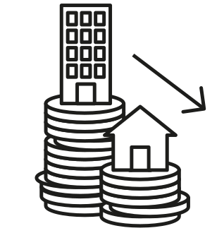
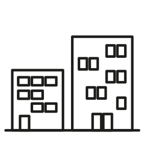

Avec près de 28 000 ventes d’appartements en 2025, l'activité progresse plus lentement à Paris que dans le reste de la région : +8% en un an et -3% en 2 ans. Au 4e trimestre 2025, les prix ont augmenté de 1,4% en un an, pour atteindre 9 600 € le m².
Evolution des volumes de ventes de logements anciens
Entre 4e trimestre 2024
et
4e trimestre 2025

Paris : +9%
Petite couronne : +12%
Grande couronne : +12%
Ile-de-France : +11%
Après une petite hausse estivale, le prix des appartements parisiens devrait rester stable dans les prochains mois, autour de 9 600 €.
Evolution du prix au m² des appartements anciens
Entre 4e trimestre 2024
et
4e trimestre 2025

Paris : +1,4%
Petite couronne : +1,2%
Grande couronne : +0,7%
Ile-de-France : +1,2%
Source : ADSN-BIENS Notaires du Grand Paris - Données mises à jour le 23/03/2026